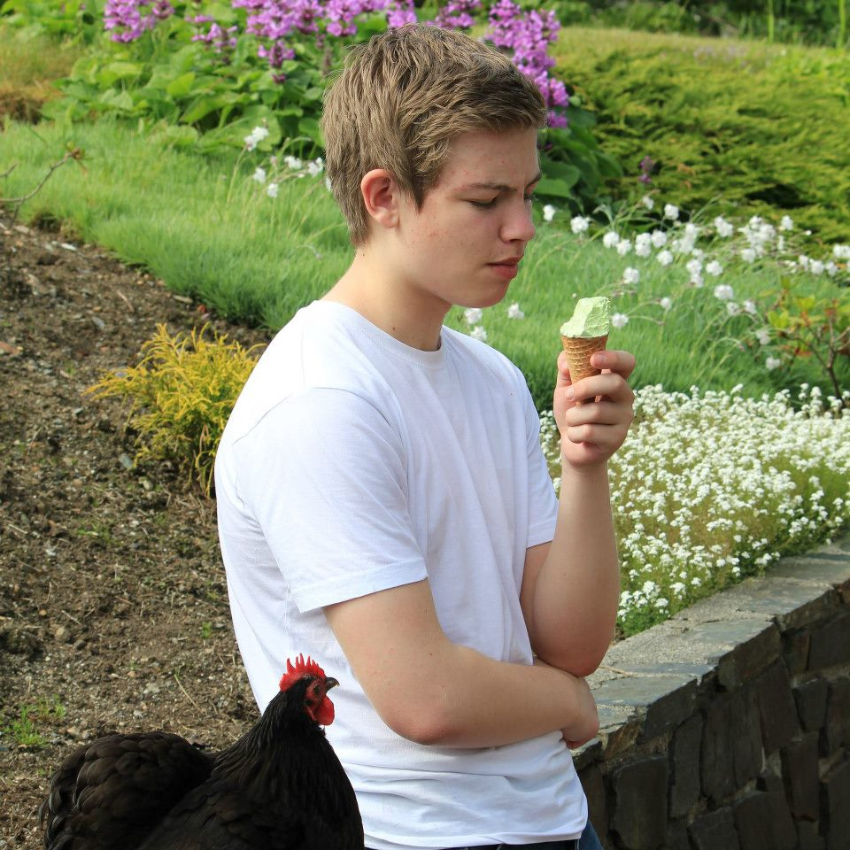

Informasjon om Daniel

Jeg er en 23 år gammel student fra Bergen. Jeg studerer informasjonsteknologi ved HVL i Bergen.
Jeg tok studiespesialisering på Sandsli videregående skole, og har tatt 2 år på Sunnhordland folkehøgskule der jeg lærte om spilldesign.
Jeg jobber som sykkelbud i Foodora.
Interesser
- Dataspill
- Anime
- Programmering
Favoritt Anime Serier
- Fullmetal Alchemist: Brotherhood
- Shinsekai Yori
- Jojo's Bizarre Adventures